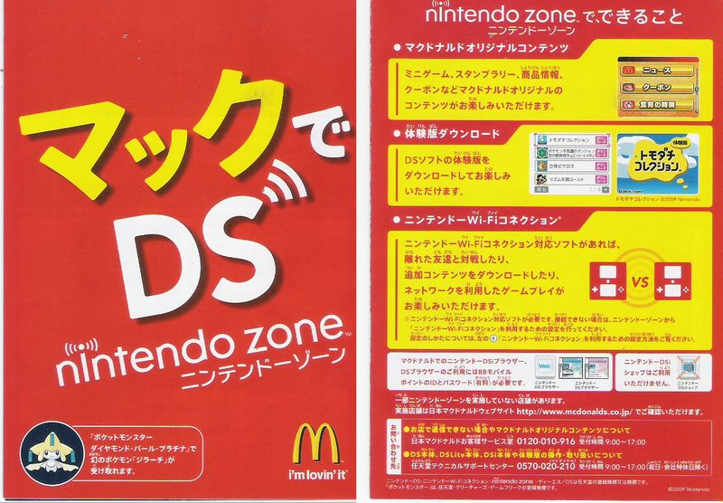
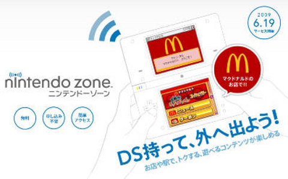

DS De Mac (マックでDS)
DS De Mac (マックでDS) was a service in McDonald's across Japan. Ds De Mac allowed customers to go to several McDonald's across Japan to download exclusive games or take part in limited time events. These events include things like Pokemon distributions aswell as things like Ds Mac Adventures.
DS De Mac Ad - Source: here

DS De Mac Panplate - Source: here

DS De Mac Ad - Source: here